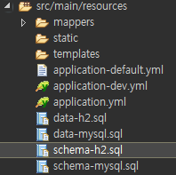
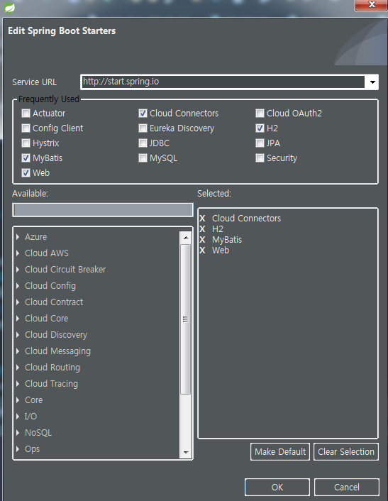
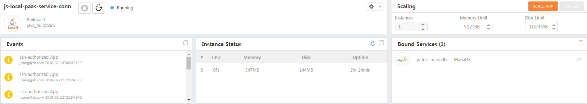
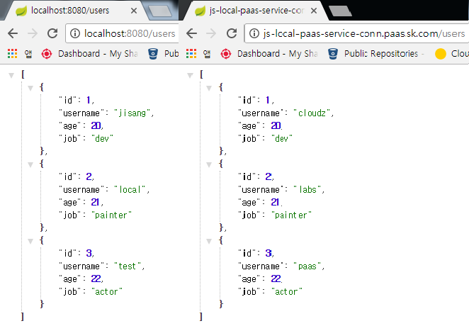
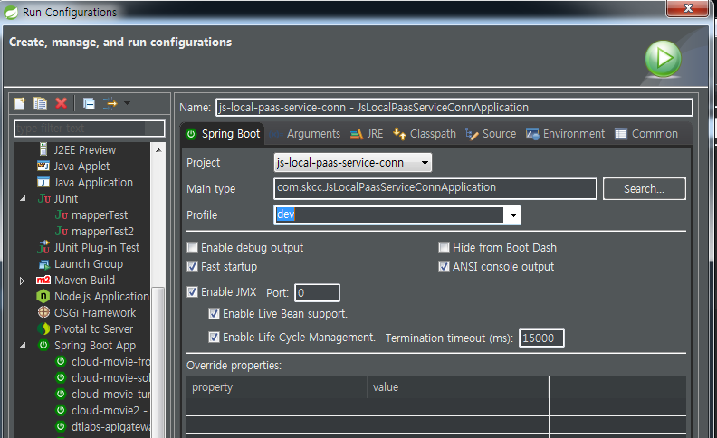
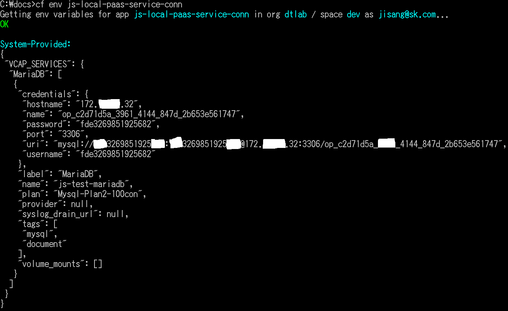
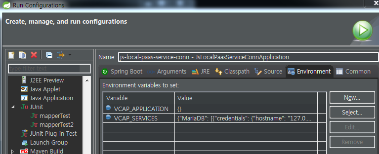
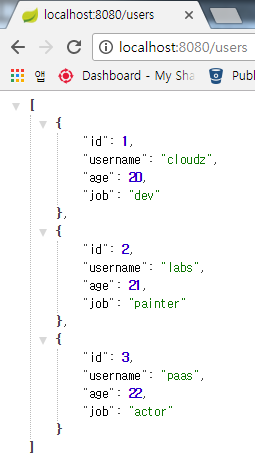

로컬 개발 환경에서 Spring Cloud Connector를 사용해서 Application에 binding 된 PaaS 서비스를 사용해 봅시다.
로컬 개발 환경과 PaaS 환경(dev, stg, prod 등) 을 분리하여 개발환경을 구성하는 경우 몇가지 불편한 점이 있습니다.
그 중 하나가 로컬 개발 환경에서 사용하는 서비스와 PaaS 환경에서 사용하는 서비스가 다른 경우입니다.
예를 들면,
로컬 환경에서 H2 DB 를 쓰다가 MariaDB로 배포하는 경우 쿼리가 다릅니다.
H2:
DROP TABLE IF EXISTS users CASCADE;
CREATE TABLE IF NOT EXISTS users (
id INTEGER,
username VARCHAR(100) NOT NULL,
age INTEGER NOT NULL,
job VARCHAR(100) NOT NULL
);
ALTER TABLE users MODIFY id INTEGER NOT NULL AUTO_INCREMENT;MariaDB:
DROP TABLE IF EXISTS users CASCADE;
CREATE TABLE IF NOT EXISTS users (
id INTEGER,
username VARCHAR(100) NOT NULL,
age INTEGER NOT NULL,
job VARCHAR(100) NOT NULL
);
ALTER TABLE users MODIFY id INTEGER PRIMARY KEY NOT NULL AUTO_INCREMENT;다른 점은 … ? MariaDB는 PRIMARY KEY가 빠지면 에러입니다.
local 환경에서 초기 데이터를 만들기 번거롭습니다.
테스트 데이터를 매번 생성 or 초기화 하는 절차가 추가됩니다.

어플리케이션 수정 후 PaaS 환경에서 테스트를 할 때마다 매번 배포를 합니다. -> CI/CD 배포 pipeline이 없다면 번거로운 절차입니다.
로컬에서는 잘 되는게 PaaS에서는 안됩니다. -> 서비스의 버전이 다른 경우,,,, 로컬에서 아무리 잘 동작해도 서비스하는 환경에서 안되면 말짱 꽝입니다. 버전 맞추는 것도 번거롭습니다.
Spring Cloud Connector 와 STS/Eclipse 의 Run Configuration(환경변수 주입) 을 활용합시다.
어플리케이션 : js-local-paas-service-conn

@Configuration
@Profile({"dev"})
public class CloudConfiguration extends AbstractCloudConfig {
@Value("${services.datasource.name}")
private String datasourceName;
@Value("${services.datasource.initial-size}")
private int minPoolSize;
@Value("${services.datasource.maximum-pool-size}")
private int maxPoolSize;
@Value("${services.datasource.max-wait-time}")
private int maxWaitTime;
/**
* configure datasource.
* @return dataSource object
*/
@Bean
public DataSource dataSource() {
PoolConfig poolConfig = new PoolConfig(minPoolSize, maxPoolSize, maxWaitTime);
DataSourceConfig dbConfig = new DataSourceConfig(poolConfig, null);
return connectionFactory().dataSource(datasourceName, dbConfig);
}
}yaml
services:
datasource:
initial-size: 1
maximum-pool-size: 100
max-wait-time: 3000
name: js-test-mariadb
initialize: false
- js-local-paas-service-conn 을 PaaS에 배포한 후 js-test-MariaDB 와 binding 합니다.

- 로컬 환경과 PaaS 환경의 데이터가 다른 것을 확인합니다.

cf ssh -N -L 63306:172.132.14.32:3306 js-local-paas-service-conn
#### STS - Run Configuration - Spring Boot - Profiles 설정
어플리케이션의 수행 profile을 dev로 설정합니다.

#### STS - Run Configuration - Environment - Environment variables 설정
어플리케이션의 PaaS 환경 변수(VCAP_APPLICATION, VCAP_SERVICES)를 설정합니다.
- VCAP_APPLCATION : {} 로 세팅합니다.
- VCAP_SERVICES : cf env {어플리케이션명} 으로 조회된 value를 엔터키 없이 복사해서 넣습니다.


> cf env로 조회된 mariaDB credential 중 hostname과 port 정보를 ssh 연동한 정보로 수정이 필요합니다.
>
> ex. “hostname”: “172.132.14.32” => “hostname”: “127.0.0.1”
#### 로컬에서 PaaS 데이터 확인

성공!